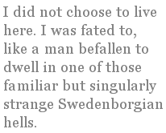

Tales I Have Been Hanged By
(Selected Expat Memories)
I
1984, How I Became a Poet
I first came to Poland in late September 1984 (the academic year in Europe begins in October), having received a scholarship from the Kosciusko Foundation in New York to do graduate work in Polish
Literature at the Jagiellonian University in Krakow. I decided to
come after having spent two weeks pursuing a M.A. in history at
Edinboro University of Pennsylvania. During a lecture I noticed a
poster near the blackboard, advertising summer vacations in Europe.
I thought to myself, “I don’t want to be here, I want
to be there.” I asked my professor, a sympathetic man of
Polish ancestry, what he would do if he were in my shoes. He
answered without hesitation, “I’d go to Poland. History
is happening there.”
A week later I found myself at Okecie airport in
Warsaw, walking down the airstairs of an Ilyushin 62. A young
soldier holding an AK-47 greeted me and other passengers with a
stone face. I was immediately struck by the smell of the air
terminal: human sweat and foul-smelling tobacco smoke (deodorant
and Western tobacco were scarce then). The air terminal itself was
about the size of the air terminal at Erie International Airport in
Pennsylvania. A communist officer studied the passports of the
Poles in front of me, made calls on a pastel-green 1960s telephone,
then let the lucky ones pass. Others were quietly escorted
away. Finally, I too was allowed to pass.
I was greeted by my future brother-in-law, Mirek, who had come
from Ogrodzieniec, a town in the south of Poland, to pick me up in
his 1960s Skoda, a Czech car that resembled a 1953
Rambler, or Studebaker. He asked me if I wanted to eat anything. I
answered in the positive.
On the way to the restaurant, I got my first look at modern
Warsaw. It seemed exotic to me in all its ugliness. I knew that the
pre-war city had been completely razed by the Germans in 1944 after
two months of heroic uprising by the Poles, but I had never
imagined that the communist architecture would be so egregious.
We stopped at a 4 star restaurant that had only sautéed
liver, horse steak, and mutton chops on its menu. Still clinging to
the Marxist mysticism that I had been initiated into at college, I
told myself that I didn’t mind eating horse, and swallowed
the dark lean meat with a straight face, washing it down with a
glass of semi-rancid kefir. Mirek had ordered liver, but was served
mutton. He was furious. It was time to head for Krakow.
We had been on the road for 3 minutes when we were pulled over
by a communist militiaman. He asked to see our documents, looked us
over, then reluctantly let us go.
We reached Krakow at nightfall. I registered at the hostel where
I would stay for the next months, received linens, and a key from a
bow-legged crone who worked, I later learned, as both a porter and
a spy. The air was metallic and oppressive, and yet I was so
exhausted from the intercontinental journey that I immediately fell
asleep.
The next day I was woken by Mirek’s knock at the door. He
suggested that I learn where the shops were and took me to one.
Though this state-owned shop was open, its shelves were empty, as
were all state-owned shops at the time.
Only some kaszanka (blood sausage) hung from a hook behind the
meat counter. I bought a pound and carried it back to my room. When
I picked through the blood and buckwheat with my fork I discovered
a dead fly.
Later that day Mirek introduced me to his friend Leszek, and
suggested that he and I become roommates, since he considered
Leszek both loyal and reliable. I asked Leszek if he spoke English,
and he answered with a convincing British accent, “Yes, of
course.” (I was to find out the next day that those were the
only words he knew in English, but having a natural acting talent,
he mastered them perfectly.)
Mirek left me in the company of his friend, and headed back to
Ogrodzieniec. I could tell from the leprechaun look in
Leszek’s eyes that he was a beer drinker. He asked if I was
thirsty, and I answered, “of course.” He took me to a
smoky dive where only one brand of lager was served, thereby
disallowing thirsty drunks the discomfort of having to make a
choice. This smoky dive was, I learned, really a restaurant called
“Hawelka,” but during the hours when beer was allowed
to be served (10 a.m. to 12 p.m. and 5 p.m. to 7 p.m.) it was a
saloon where workers, dissidents, students, professors, poets,
actors, snitches, con-men, KGB officers and whores often shared the
same tables, albeit reluctantly. “People will do anything to
quench their thirst, even sit with their oppressors or
ex-wives,” I thought.
We each drank about 10 pints, offering the waiter a generous
bribe each time he brought us a fresh draught, then we headed back
to the hostel. In the lobby Leszek noticed one of his friends and
introduced me to him. I had always wanted to feel what it’s
like to say comrade to someone in a communist country, so I
foolishly hailed the young man,
“Czesc, towarzyszu! (Hi,
comrade!).” He responded with a left hook to my noggin, then
fled through the doorway. I had done my share of fighting when
younger, so what surprised me was not the force of the blow, but
the immense hatred of communism in the young man who threw it. To
him and to Leszek communists were traitors and careerists who were
responsible not only for the existence of an oppressive
totalitarian state, but for completely ruining the Polish economy,
while living in luxury themselves. I would learn that the empty
shops were for regular Poles, and the elegant stocked shops for
communists and foreigners who had hard Western currency.
Leszek introduced me to other student dissidents. Within a month
I had disavowed my Marxist leanings. I began to take part in street
protests and helped produce and distribute samizdats. I learned the
hardest way, by experiencing it first-hand, that communism does not
work. Denying natural incentive, it encourages corruption by those
in positions of power. It punishes the honest and able by rewarding
the dishonest and unable.
I attended lectures in the morning at the Jagielonian
University, and then spent the afternoon in Krakow’s old
town, marveling at the beauty of the Romanesque, Gothic,
Renaissance, and Baroque architecture. In the evening I often found
myself in the company of Polish women.
I started to question whether I really wanted to be an
historian. I had been writing and publishing poems since my second
year in college, and felt pulled in that direction more and more. I
started to read Polish poetry only in the original, and found
myself under its spell. It was not an empty poetry of things as
William Carlos Williams dictated, but a poetry of palpable ideas
and history, a poetry that not only reflected, but effected
people’s lives.
By December I had been beaten up badly by members of ZOMO (communist paramilitary riot police)
while taking part in street protests, I had become an anti-communist, and I had become a poet.
II
1994, Nothing More, Nothing Less
The city I live in (Gliwice in Polish, Gleiwitz in German) is at
the center of a vastly industrialized and thoroughly polluted
region in south-central Poland, called Upper Silesia. It is
architecturally German, having been for hundreds of years part of the Kingdom of Prussia. Immediately following the Second World War, the mostly German inhabitants of the city were expelled, and forced to walk back to Germany,whose eastern border had just been shifted
westward in accordance with the Big Three’s Potsdam Agreement. Today the city is inhabited by Poles from lost eastern
Polish territory (territory ceded to the Soviet Union) and by
indigenous Polish Silesians.
I did not choose to live here. I was fated to, like a man
befallen to dwell in one of those familiar but singularly strange
Swedenborgian hells. Self-willed or fated, nonetheless I live in a
modest flat with my wife and sons. By night I labor out of love of
selves and souls as yet unborn, but soon to manifest. By day I
prostitute my native tongue for money by teaching Poles the past
simple and the present perfect. I earn enough to dabble in the meaningless muck of daily existence, no more.
* * *
Once upon a particular occasion in September I spent a weekend
of debauchery with the Polish poet B.S. (as much a scoundrel and
sorcerer as any of us). At the end of that trek among herbs and
bottled spirits, after having talked and babbled with each other on
themes as various as garlic and gnosticism, as useful as prisons
and poetry, I accompanied my friend to the dirty railway station in
the center of town.
We sat in the little bistro in the station sipping our last
bottle of beer to the roar of trains arriving and departing.
Suddenly, off-guard and too weary to run to the nearest toilet, I
began to ejaculate my monk’s modest breakfast, violently and
painfully.
Before I had a chance to gather my senses, two pimple-faced cops
came from nowhere, and omnisciently examining my teary red eyes,
yapped, “Dokumenty! (Documents!)”
I reached into my pocket and sheepishly pulled out my alien
registration card, then proudly showed it to them.
Having since stared down my dishevelled person disapprovingly,
these little fellows concluded that I wasn’t an American
after all, but probably a Ukrainian or a Romanian, or even worse, a
Bulgarian!
“You’ll have to come with us!”
“Why?” I asked, sarcastically shocked.
My companion
tried to reason with them, explaining that he and I would gladly
clean up the mess, but they paid little or no heed to his
entreaties.
“Let’s go!” they ordered.
Descended on my father’s side from an old aristocratic
family from the Grand Duchy of Lithuania, I replied (in the spirit
of monarchy and anarchy), “You Silesian yokels, what for?
What’s the charge?”
Before giving me a chance to utter another word in my slightly
broken Polish, they tied both my hands behind my back and dragooned
me out of the railway station. On the way, I noticed a
Jehovah’s Witness holding a picture of paradise, and saw,
perhaps, in a phantasmagoric flash, the first dead leaf of autumn,
a maple.
In the neighboring police station they tried to question me.
I told them that I wouldn’t cooperate with former
communist stooges, and that if this were a hundred years ago they
could all gladly genuflect and kiss both my buttocks. These words
infuriated them. They cuffed my hands (still behind my back), and
subsequently began to use my face and gut as a punching bag.
Pretending it didn’t hurt, with every blow I mentioned
that my dead grandmother could punch harder.
Bloodied and half-unconscious, I was thrown into an awaiting
police van and hauled to the local drunk tank.
There I tried to explain to the proprietor that I wasn’t
really drunk and was indeed quite reasonable and peaceful, though
at the moment a bit unhappy. I told him of how I’d been
beaten, and, with the consciousness of Joe Stalin, he replied,
“You look fine to me.”
He ordered me to strip down to my shorts and to stand on one
leg, and, after having agreed with me that I really wasn’t
drunk, commanded his subordinates to hose me down with cold water
and to lock me up.
Lying soaked in my refrigerated cell, I stared like Svidrigailov
at a spider spinning its web of doom, forever.
Sometimes I cupped my lifeless penis in my bloody hands, and
simultaneously thinking of God and oblivion, mused on how much
I’d have to pay for the fine, or whether or not I really
liked the smell of my own sweat.
Every hour another drunk was thrown into the cell. Regular
clients, they’d piss right on the floor.
Outside birds talked in tongues.
Police vans perpetually pulled up with more drunks and drove
away.
For one whole particular hour I listened to the
proprietor’s educated guesses as he watched Family Feud in
Polish, and I smiled to myself and the ceiling: the latest
import.
Five hours later I was given back my clothes and belt, then
coldly led out the door without a previously present penny in my
pocket.
I’d expected nothing more, nothing less.
III
2004, The Encounter
Falling, I reached for one more can of beer, but there was
none...
“Someone’s burning leaves,” I thought.
The sun wasn’t visible. Still, somehow I knew it was
somewhere beyond the clouds the color of slag, shedding
tears...
I needed a beer, needed one badly, but had no native currency, let alone pockets...
The cars in the streets all seemed strange. It didn’t
occur to me that they were from the late 1940s. And the people I
passed all looked familiar. Somehow I knew them all, but
couldn’t stop to say hello, nor knew why.
I entered a singularly sullen dive, immediately conscious that it was home for good, that it was... mercy.
I asked the barkeep for a beer, and, pulling his head out of
nothingness, he looked deep into my eyes and said with the greatest solemnity, “We only serve this.”
I understood and asked for a pint.
He obliged by placing a tall glass of blackest brew before me, then pointed to the table in the middle of the abyss...
I recognized the man sitting there immediately. He was Dylan
Thomas — fish-eyed, double-chinned, and wonderful.
I sat and got down to business. I told him that I
considered Donald Hall an incurable clod, and he laughed
resonantly, then asked if I’d mind sharing my porter with
him.
“Is that what it is?” I queried, gesturing with my
eyes that he help himself.
He gulped half and I the other half.
I asked if it bothered him that so few critics understand why
dark is right, and, holding a stone in his hand, hitherto unnoticed by me, he replied without the slightest trace of irony, “No, not at all.”
I understood and ordered two more pints. We talked at length
about words, alchemy, druids, burial mounds, and boxing.
I mentioned that I liked George Foreman, and he said,
“Who?”
“Ah, that’s right,” I thought.
And suddenly a flock of crows the size of ravens alighted on our heads.
In recognition of what seemed natural to us both, he
challenged me to a duel.
I took him up, and we chugged down our pints in no less than a second, no more than a lifetime.
Then the sun suddenly slit my eyes open with unbearable
brightness.
I woke with the taste of porter on my tongue, looked into the
mirror behind my eyes: still dressed to die, if only for a
time.